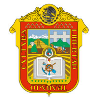

El Hombre de Tepexpan es un hallazgo importante para los antropólogos mexicanos y extranjeros, ya que es una clave importante para entender como era la zona del Valle de México hace casi 3000 años; además, permite datar el inicio del poblamiento del área que ocupa la Ciudad de México. Algunos estudiosos le atribuyeron inicialmente una edad de 11 mil años; otros, de 5 mil, e incluso algunos han sugerido 3 mil años. Este individuo fue al principio identificado como un varón, pero investigaciones recientes lo identifican como una mujer, aunque es tema de debate. El suelo ha sido habitado desde aproximadamente el año 35,000 a.C. por hombres primitivos que cruzaron el estrecho de Bering, procedentes de Asia. Eran nómadas, cazaban grandes animales como mamuts y recolectaban frutos, según evidencias arqueológicas encontradas en este lugar. Uno de los hallazgos más sobresalientes del arte primitivo en América se encontró en este municipio, y tomó el nombre de Hueso sacro de Tequixquiac. El clima de la zona en general es templado subhúmedo con lluvias en verano y temperatura media entre los 10 y 16° centígrados con precipitaciones entre 500 y 1500 mm. excepto en la depresión del río Balsas; en tierra caliente, donde es cálido subhúmedo debido a la baja altitud y en la cima de los volcanes que es polar por la altura La temperatura media anual es de 14.7 °C, las temperaturas más bajas se presentan en los meses de enero y febrero son alrededor de 3.0 °C.La temperatura máxima promedio se presenta en abril y mayo es alrededor de 25 °C. La economía mexiquense contribuye un 9.5% al Producto Interno Bruto de México, lo que le posiciona como la segunda economía del país, sólo detrás de la Ciudad de México. El PIB estatal está compuesto en un 28% por la industria manufacturera, de maquinaria y equipo, de electrónicos, automotriz, textil y maquiladora; un 22% por el sector servicios; el 20% por el comercio, hoteles y restaurantes; y el 15% por los servicios financieros y actividades inmobiliarias. En la comida, es tradicional en un día de mercado encontrar mixiotes, tlacoyos, quesadillas de hongos, tamales, guajolote en salsa verde o pipián, queso molido o de letras, requesón, guajolote en chile mexcalpique, samborojo tazarbo, acociles, escamoles, mosco (licores de frutas), limones rellenos de coco, dulces de leche, fruta cristalizada, dulce de pepita y cacahuate, alegrías y garapiñas toluqueñas. En el Valle de Toluca se elaboran importantes cárnicos o embutidos, herencia de los españoles que se establecieron en la región debido a la crianza de cerdos, tales como; los chorizos, las longanizas verdes y rojas, el jamón serrano, el queso de puerco o queso chompepe, el tocino, el obispo y salchichones de carne de cerdo. El estado de México comparte una gastronomía con otros estados limítrofes, por ejemplo; el ximbó, los gualumbos y la barbacoa de carnero que son también parte de la gastronomía del estado de Hidalgo.
